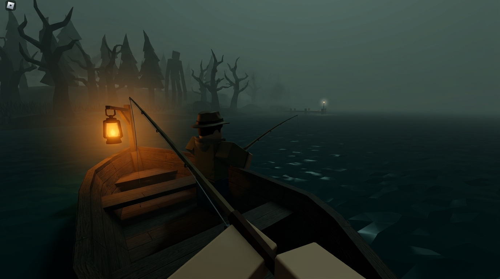
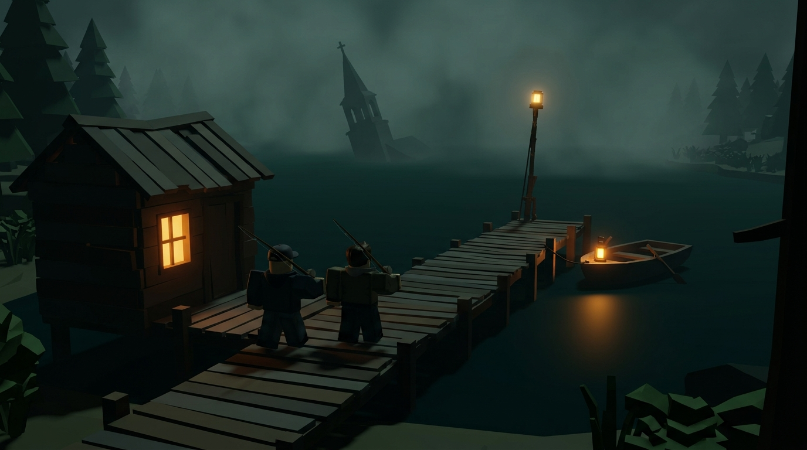
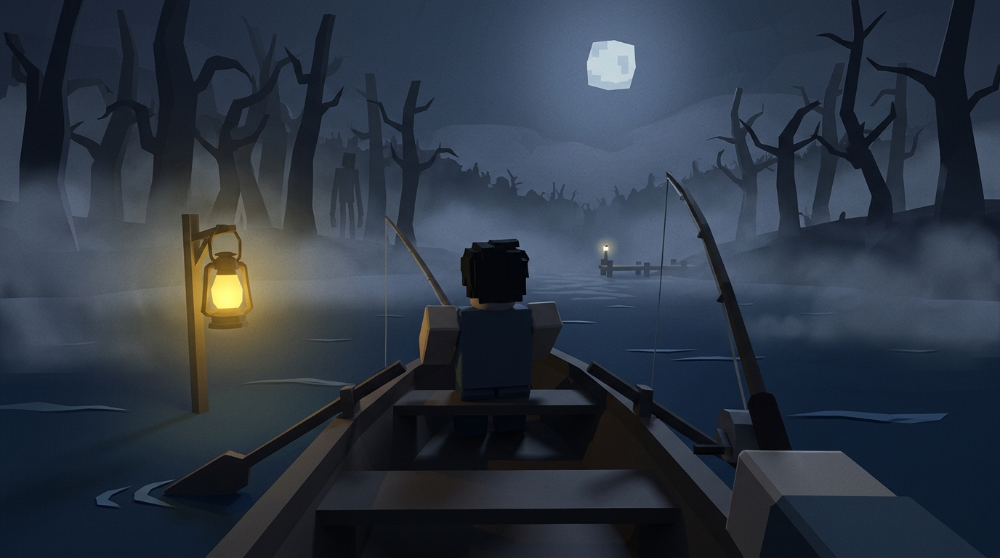
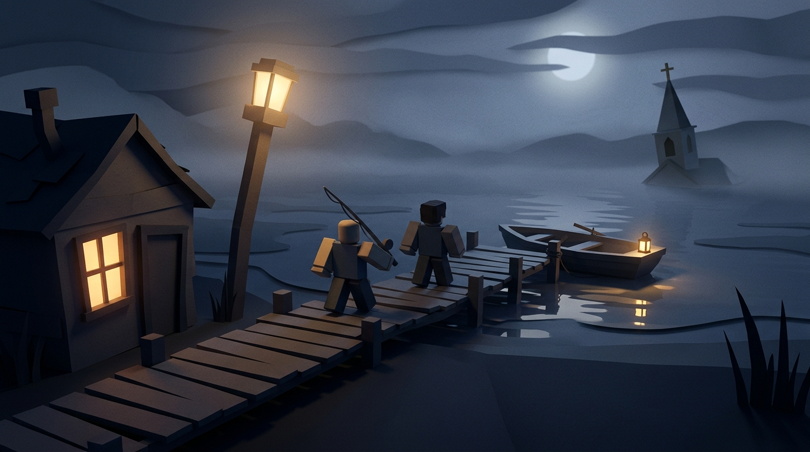
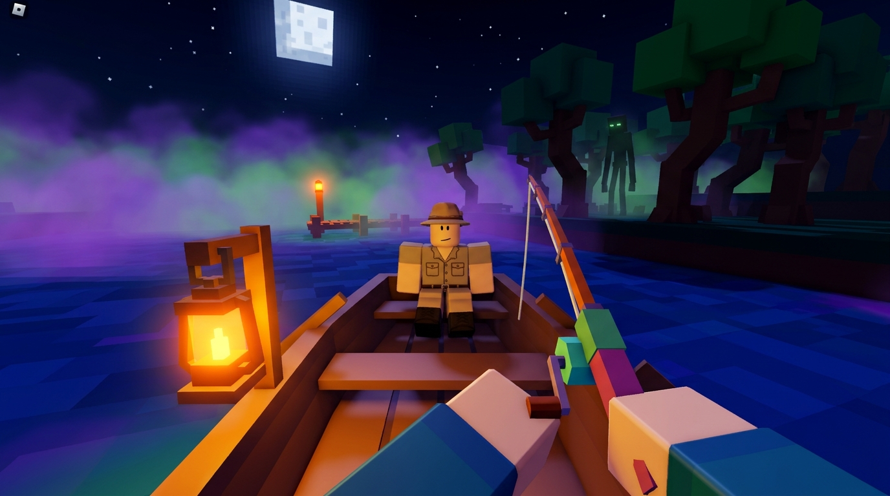
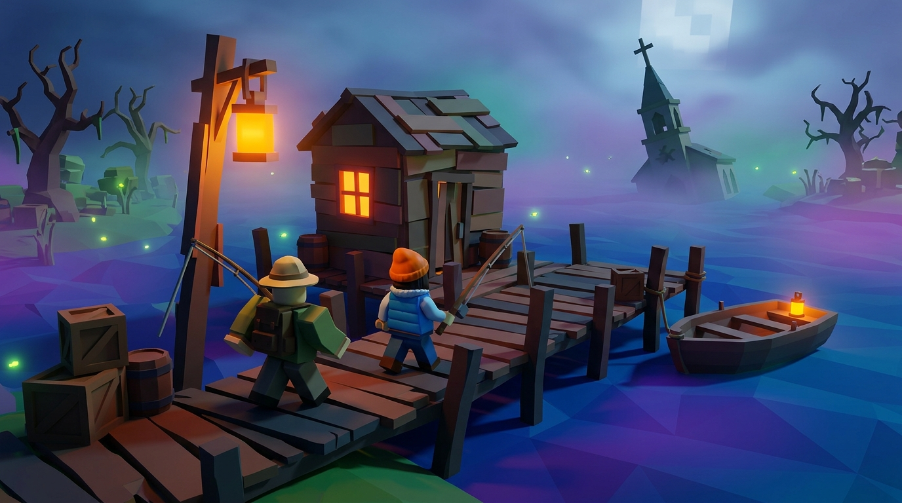
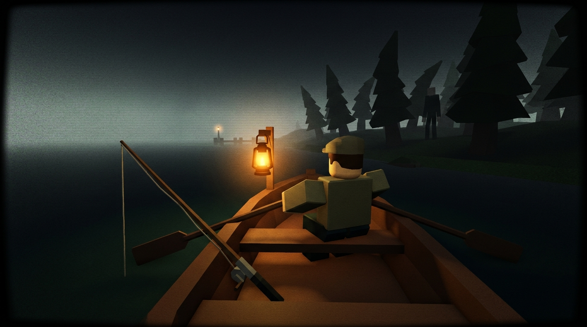
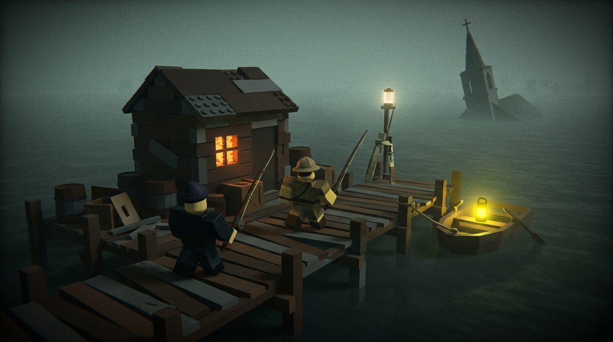
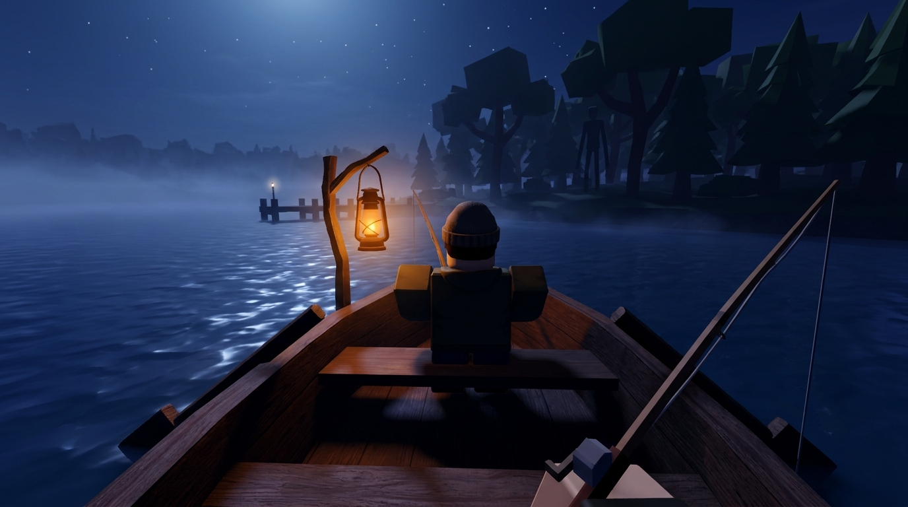
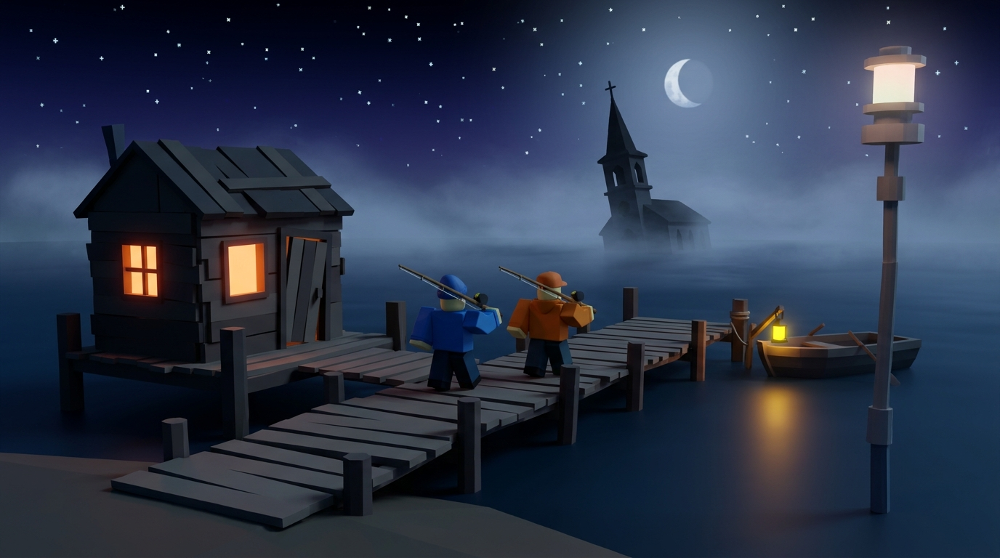

Tull's Bait and Tackle, night shift
Same game, five different looks. In every picture you are in the boat with the lantern, the dock light is far away, and something tall is standing in the trees. Tap the one you want to play in. You can change your mind.
Almost black water, thick fog, and your lantern is the only real light. The scariest one. You mostly see shapes.


Like a shadow puppet show made of cut paper. Blue layers, a pale moon, mist between the trees. Spooky like a storybook.


Bright, chunky, classic Roblox. Purple and green fog, glowing eyes, a big square moon. More fun than frightening.


Looks like somebody filmed it on an old camcorder. Grainy, a little green, like a tape you were not supposed to find.


A beautiful night. Stars, silver water, thin mist. Calm and pretty, with something a little bit wrong.


These pictures were drawn by an AI to show the idea. The real game is built from Roblox blocks, so it will be simpler than these, but it will follow the look you choose. The game keeps getting built in look number 1 until you decide.